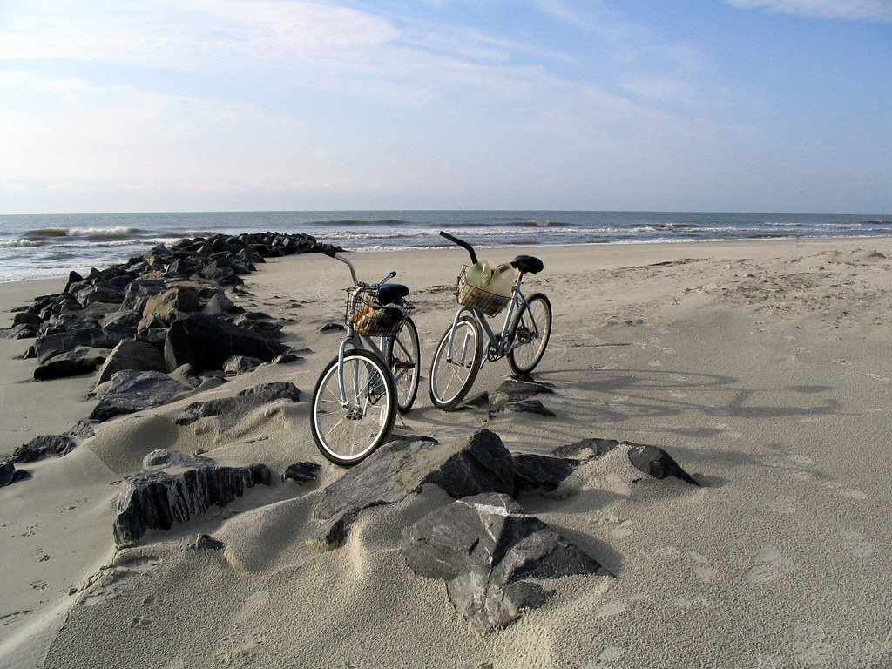

From the beaches, to the golf courses, to the bike trails and the shops, there's plenty of fun activities to do on your trip.
If you're traveling to the island, of course you need to visit its beaches. Hilton Head has nearly 9 miles of sand overlooking the beautiful Atlantic Ocean, all of which is publicly accessible. There are also several parks with beach access from which you can walk or bike the length of the island.
From sunset dolphin cruises to guided kayak tours, there's plenty of variety in the boat tours available. Choose what piques your interest most, or try them all!
Another popular activity on the island is biking, as there's over 25 paths and many bike rental companies to choose from. The bike paths offer many cool sights, so make sure to check some out!
Don't forget to buy a souvenir on your trip! You can find anything you need in the different shopping plazas around the island.
Pretty much anywhere you go on the island you will find golf courses nearby--there are too many to count! Hilton Head hosts the Heritage golf tournament in April every year, so you could play the same courses as some of the pros!